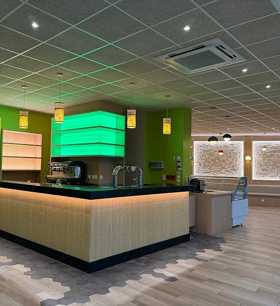
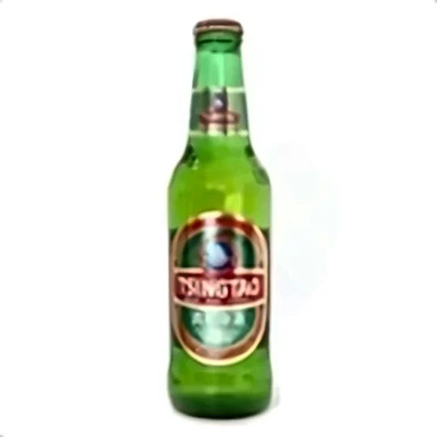

Brasserie & bar
Une grande salle lumineuse, une terrasse sur la place et un comptoir. On vient pour un café, un déjeuner ou une pression entre amis.

Sur place
Un lieu pour se poser
Le Bambou n'est pas seulement un traiteur : c'est aussi une brasserie et un bar où l'on peut s'asseoir, à l'intérieur comme en terrasse.
- La salle : claire, avec des touches de vert bambou et des luminaires chaleureux.
- La terrasse : sur la place piétonne, avec ses chaises vertes, idéale aux beaux jours.
- Le comptoir : pour un café rapide ou une bière à la pression.
Toute notre carte asiatique peut aussi se déguster sur place.
Du matin au soir
Quand venir ?
Ouvert du lundi au samedi de 10h00 à 20h20, le Bambou change d'ambiance au fil de la journée.
La pause café
Expresso, cappuccino, chocolat ou thé au jasmin, en salle ou en terrasse.
Le déjeuner
Un plat au wok, un menu ou des sushis, sur place ou à emporter au bureau.
La terrasse
Une boisson fraîche, une limonade ou un diabolo au soleil, sur la place.
L'apéro
Asahi ou Monaco à la pression, une Tsingtao ou un verre de vin entre amis.
Servie sur place
La carte des boissons
Voici les boissons servies à la brasserie et au bar. Elles sont différentes des boissons en canette proposées en livraison (voir la page « La carte »).
- Boissons chaudesde 2,10 € à 4,50 €
- Boissons fraîchesde 3,50 € à 4 €
- Bièrespression et bouteille, dès 3,50 €
- Vinblanc, rouge, rosé : 2,80 €

Le coin du bar
Nos bières
À la pression, en 25 cl ou 50 cl :
- Asahi : la bière blonde japonaise, sèche et rafraîchissante.
- Monaco : le panaché à la grenadine, doux et fruité.
En bouteille : Heineken, Super Bock, Leffe blonde, et la chinoise Tsingtao (33 cl ou 64 cl), aussi disponible en livraison.
L'abus d'alcool est dangereux pour la santé, à consommer avec modération. Vente d'alcool interdite aux mineurs.
On vous garde une place en terrasse ?
35 boulevard du Général Leclerc, Nanterre. Du lundi au samedi, 10h00 – 20h20.